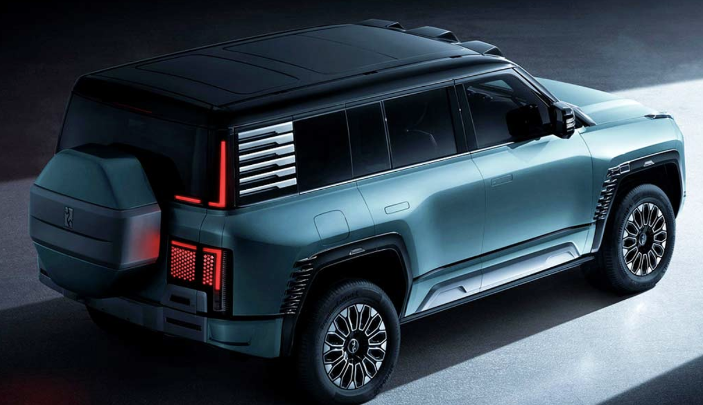

1196 л.с., 1000 км на баке бензина, встроенный спутниковый телефон, танковый разворот, езда боком, 4 электродвигателя, 1 бензиновый генератор, полный привод, 4 ведущих колеса и режим плавания. Представлен BYD YangWang U8 — самый крутой китайский внедорожник

После многих месяцев демонстрации тизеров в Китае наконец-то состоялась официальная премьера внедорожника BYD YangWang U8. По совокупности качеств его можно назвать самым крутым автомобилем на рынке, но он также и самый дорогой: цена составляет 1 089 000 юаней (примерно 150 тысяч долларов США или 13 453 245 ₽), и это делает U8 самым дорогим массовым автомобилем в Китае, если брать в расчет авто на новой энергии.
BYD YangWang U8 не является электромобилем — это подключаемый гибрид. Но гибрид очень мощный. Здесь четыре электромотора, каждый из которых приводит своё колесо. Мощность каждого электромотора — 299 л.с., в сумме — 1196 л.с. Такая схема с четырьмя независимыми электродвигателями позволила реализовать возможность танкового разворота: BYD YangWang U8 может вращаться на 360° стоя на месте.
Зарядку тяговой аккумуляторной батареи ёмкостью 49,05 кВт·ч обеспечивает 2-литровый мотор. Запас хода на чистом электричестве составляет 180 км (измерен по методике CLTC), запас хода полностью заряженного и заправленного (объём топливного бака — 75 литров) YangWang U8 — 1000 км.
Для гибрида расход приличный, но надо понимать, что и машина далеко не маленькая. Габариты YangWang U8 составляют 5319 × 2050 × 1930 мм при длине колёсной базы 3050 мм. Несмотря на впечатляющую длину, машина сугубо 5-местная. Снаряжённая масса внедорожника — почти 3,5 тонны. Но большой запас мощности делает YangWang U8 очень динамичным: до 100 км/ч автомобиль разгоняется за 3,6 с.
Внедорожник получит 38 различных датчиков, использующихся в системе автономного вождения. В их числе 3 лидара, 13 камер, 12 ультразвуковых датчиков и 5 радаров миллиметрового диапазона. Интересно, что при этом машина поддерживает системы помощи, отвечающие лишь второму уровню автономности. В большинстве других машин они реализуются без лидаров и в целом с меньшим количеством датчиков. Данные с сенсоров обрабатывает SoC Nvidia Drive Orin.
BYD YangWang U8 получил салон с наппа-кожей и 6 больших экранов. Перед водителем — дисплей с диагональю 23,6 дюйма. Экран аналогичной диагонали перед передним пассажиром, два экрана для задних пассажиров закреплены на спинках передних кресел. Также есть экран с диагональю 12,8 дюйма на передней панели и 50-дюймовый проекционный дисплей. За звук отвечает система Dynaudio с 22 динамиками. Примечательная «фишка» внедорожника — встроенный спутниковый телефон. Видимо для тех, кто заберётся в глубокие дебри.
BYD YangWang U8 оснащён гидравлической системой Disus-P, которая позволяет поднимать кузов над дорогой на впечатляющие 15 см. И это при том, что клиренс и так не маленький. Так что на этой машине можно действительно уехать далеко. И даже вода не является преградой: версия Premium Edition позволяет преодолевать брод глубиной 1 метр, а версия Off-road Master Edition, оснащённая шноркелем, может штурмовать водную преграду глубиной 1,4 метра.
При «водных процедурах» кузов автоматически поднимается в максимальное положение, окна закрываются, климатическая система переводится в режим рециркуляции, а панорамная крыша открывается, образуя собой аварийный выход на всякий случай. При погружении под воду глубина отображается на центральном экране.
BYD YangWang U8 может плавать в течение 30 минут и двигаться вперед со скоростью 3 км/ч, ускоряясь и поворачивая колёса. Он даже может выполнять танковые развороты во время плавания. Создатели уверяют, что внедорожник имеет защиту IP68.
Предварительные продажи BYD YangWang U8 уже начались, поставки первых автомобилей ожидаются в октябре.
Кроссовер Lotus Eletre: точные характеристики и топ-версия R с мощностью 918 л.с.
Британская компания Lotus Cars, контролируемая китайским холдингом Geely, раскрыла цены и точные технические характеристики первого в своей истории кроссовера Eletre, оснащённого полностью электрической силовой установкой. На рынок Eletre выйдет в первой половине 2023 года.
Мировая премьера кроссовера Lotus Eletre состоялась в марте этого года, но тогда британская компания обнародовала лишь приблизительные технические характеристики, а теперь даны точные цифры и подтверждены слухи о самой мощной версии с отдачей свыше 900 л.с., но её особенности в реальности оказались не такими, как докладывали инсайдеры. Итак, первый электрический кроссовер Lotus выйдет на рынок в трёх версиях — базовой Eletre, промежуточной Eletre S и топовой Eletre R, все они снабжены двухмоторной силовой установкой (по одному на каждую ось). Максимальная совокупная отдача у версий Eletre и Eletre S составляет 450 кВт (612 л.с.) и 710 Нм, разгон до 100 км/ч занимает 4,5 с, максимальная скорость — 258 км/ч.
Батарея на все версии одна, ёмкостью 112 кВт·ч, её полного заряда у версий Eletre и Eletre S должно хватить на 600 км пробега по циклу WLTP, у версии Eletre R — на 490 км. 800-вольтовая архитектура позволяет пополнить заряд батареи на экспресс-терминале с 10 до 80% всего за 20 минут. У топ-версии Eletre R отдача силовой установки увеличена до 675 кВт (918 л.с.) и 985 Нм, первую «сотню» такой кроссовер набирает за 2,95 с, максимальная скорость — 265 км/ч. Вдобавок Eletre R имеет карбоновый обвес, уникальные настройки подвески и хардкорный ездовой режим Track. Lotus Cars утверждает, что Eletre R — самый быстрый в мире двухмоторный кроссовер, что правда: 1020-сильный Tesla Model X Plaid оснащён трёхмоторной силовой установкой и может разогнаться до 100 км/ч за 2,6 с.
Зато Lotus Eletre R может оказаться самым быстрым серийным кроссовером на Северной петле Нюрбургринге и побить прошлогодний рекорд круга бензинового Porsche Cayenne Turbo GT. Разработчики Eletre R уверяют, что его ездовые качества «шлифуются» именно на Нюрбургринге и что Eletre R даже получит уникальную способность проехать легендарную трассу в полностью беспилотном режиме — британский кроссовер оснащён штатными лидарами «по кругу» и другими органами искусственного зрения, необходимыми для работы полноценного автопилота.
Различия между версиями Eletre и Eletre S сводятся к более богатому оснащению у последней: в него входят активный спойлер на корме, более продвинутая диодная подсветка внутри и снаружи, доводчики дверей, система контроля качества воздуха в салоне, 2160-ваттная аудиосистема KEF Reference с 23 громкоговорителями (у базового Eletre — 1380-ваттная KEF Premium c 15 громкоговорителями) и многое другое.
Базовые колёса — 22-дюймовые, но можно заказать также 20-дюймовые и 23-дюймовые. Дорожный просвет на 20-дюймовых колёсах — 187 мм, на 22- и 23-дюймовых — 194 мм. Максимальная дальность хода достигается на 20-дюймовых колёсах. Габаритная длина кроссовера — 5103 мм, ширина с традиционными наружными зеркалами — 2231 мм (с камерами вместо зеркал — 2135 мм), высота — 1630 мм на 20-дюймовых колёсах (на 22- и 23-дюймовых — 1636 мм), колёсная база — 3019 мм. Объём основного багажника — 688 л при трёхместном заднем диване (611 л при двух раздельных креслах во втором ряду), со сложенным трёхместным диваном — 1532 л. Объём дополнительного переднего багажника — 48 л.
Мультимедийная система кроссовера работает на собственной операционной системе Lotus Hyper OS, сделанной на базе игрового движка 3D Unreal Engine, плавную работу обеспечивают два мощных процессора Qualcomm 8155.
Lotus Eletre будет выпускаться на новом заводе компании в китайском Ухане, но первыми электрический кроссовер получит не только Китай, но и страны Европы, причём наиболее привлекательные цены заявлены для Германии: базовый Eletre здесь стоит от 95 990 евро, Eletre S — от 120 990 евро, Eletre R — от 150 990 евро. Заказы на кроссовер уже принимаются, отгрузки готовых машин клиентам начнутся в первой половине 2023 года, продажи за пределами Китая и Европы начнутся в 2024 году.
Xiaomi SU7
Xiaomi SU7 - это автомобиль, который был выпущен китайской компанией Xiaomi. Этот автомобиль представляет собой электрический седан класса «люкс» и стал очень популярным на рынке электромобилей.
Полноприводная версия — SU7 Max — оснащена аккумулятором Qilin ёмкостью 101 кВт⋅ч от CATL, обеспечивающим максимальный запас хода 800 км. Полноприводный автомобиль имеет мощность 475 кВт, позволяющую разогнать Xiaomi SU7 до 100 км/ч за 2,78 секунды при максимальной скорости в 265 км/ч.
Батарея SU7 способна пополнить запас энергии для преодоления 220 км за 5 минут, 390 км за 10 минут, 510 км за 15 минут.
Производитель указывает, что SU7 — аэродинамический автомобиль с коэффициентом лобового сопротивления в 0,195.
Xiaomi SU7 немного длиннее Porsche Taycan, габариты китайского электромобиля: 4997/1963/1455 мм при колёсной базе в 3000 мм. Объём переднего багажника составляет 105 литров, а заднего — 517 литров.
Внутри салона SU7 размещён 16,1-дюймовый центральный дисплей с разрешением 3K и два 7,1-дюймовых ЖК-экрана для пассажиров на заднем сидении. Навигация может отображаться на 56-дюймовом HUD.
Операционная система HyperOS работает на базе процессора Qualcomm Snapdragon 8295, система автономного вождения Xiaomi Pilot использует чип Nvidia Orin-X, имеющий вычислительную мощность в 508 TOPS.
В Китае SU7 будет конкурировать с Porsche Taycan и Tesla Model S. Xiaomi намерена войти в пятёрку лучших автомобильных компаний в мире за ближайшие 15-20 лет, поделился Цзюнь. Электромобиль появится на рынке в начале 2024 года. Однако производитель до сих пор не объявил цену SU7 и SU7 Max.
Zeekr 001 FR
1 сентября Zeekr представил конкурента Tesla Model S Plaid Zeekr 001 FR. Полноприводной автомобиль оснащен четырьмя электродвигателями мощностью 1247 л.с. (1265 л.с.) и максимальной скоростью 280 км/ч. FR означает «Дороги Будущего».
Разгон до 100 км/ч составляет безумные 2,07 секунды, «если измерять его по Tesla», — заявили руководители компании во время конференции. Они имели в виду сценарий с плавным стартом. Если измерять, включая время старта, оно составляет 2,37 секунды.
Автомобиль может выполнять разворот танка (разворот) благодаря четырем независимым электродвигателям. Эту функцию мы раньше видели только на… танках и каких-то сумасшедших внедорожниках от BYD, никогда на шутинг-брейке. По данным компании, при выполнении разворота пиковый крутящий момент на колесах достигнет 10 000 Нм.
Performance EV имеет четыре электродвигателя; однако они не одинаковы. Спереди машина оснащена парой двигателей по 155 кВт; сзади расположены два двигателя мощностью 310 кВт. Итак, автомобиль представляет собой полноприводный автомобиль с доминирующими задними колесами, что как раз соответствует сути суперкара. Кроме того, в заднем двигателе для обмотки ротора используется углеродное волокно, а общая плотность мощности составляет 4,4 Вт/кг.
Zeekr утверждает, что, оснащенный аэродинамическим комплектом из углеродного волокна, он может выдерживать максимальную боковую силу (из стороны в сторону) 1,4G.
Суперкар также оснащен тормозной системой гоночного уровня: 10-поршневыми суппортами AP Racing спереди и 4-поршневыми суппортами сзади, а также карбоно-керамическими тормозными дисками Brembo. У него настоящие гоночные колеса — 22-дюймовые шины GTR2 от Giti Motorsport (передние 265/40 R22 и задние 295/40 R22).
HiPhi Z
HiPhi Z – это лифтбек в футуристическом стиле от китайской компании Human Horizons.
Данный электрокар относится к классу техно-люкса, собирающего в себе почти все передовые технологии автомобильного строения на сегодняшний день.
2 мотора, общей мощностью 672 лс. и батареями на 120 кв.ч. способны разогнать данный автомобиль массой 2.5 тонны всего за 3.8 секунды до 100 км.ч. А быстрая зарядка с индикатором за 30 мин зарядит автомобиль с 20 до 80%. По заявлению производителя – запас хода HiPhi Z составляет 700 км, но в реалиях эта цифра, скорее, будет равняться около 600 км., не говоря уже про зимний период эксплуатации.
HiPhi Z интересен своей электрической начинкой и имеет кучу примочек. Программируемые матричные L- образные фары с возможностью проецирования текстов, фото или видео. Ну, например, спроецировать зебру для пешехода, дав ему понять, что вы его пропускаете или написать на боковой двери какое-нибудь послание другим участникам движения.
Двери данного автомобиля заслуживают отдельного внимания. Во-первых, не имеют ручек — открытие происходит благодаря кнопкам. Во-вторых, открываются друг на друга, как в «роллс ройсе». А, в-третьих, у дверей нет рамок. Согласитесь, это очень классно смотрится! Заднего стекла фактически тоже нет: его частично заменяет продленная назад панорамная крыша, но нижняя кромка все равно расположена высоко, так что от салонного зеркала заднего вида толку немного. Именно поэтому вместо зеркала стоит монитор, получающий изображение с камеры, расположенной на багажнике авто. Кстати, Багажник на 318 литров.
В крышку багажника встроен выдвижной спойлер. На этом фоне атавизмом выглядят обычные боковые зеркала заднего вида, но это лишь потому, что камеры в КНР пока запрещены.
Все настройки автомобиля выполняются с центрального дисплея, на котором отображается вся информация по климату, по управлению, навигации и общей настройки автомобиля.
С дисплея можно так же открывать двери, стекла, регулировать и настраивать сиденья, играться в огроменном списке приложений, настраивать подсветку…, в общем, куча всего.
Основные данные по скорости и остатку заряда отображаются на проекции лобового стекла перед водителем.
Салон авто выполнен из качественных материалов – кожи и алькантары. Он не скрипит на неровностях дорожного полотна и лишен привычных китайских запахов. Имеет двойные стекла и панораму. Словом, качество отделки и используемых материалов действительно на высоком уровне, которому могут позавидовать даже именитые европейские автопроизводители.
Мощность двигателя: 672 л.с. ( 494 кВт)
Крутящий момент: 820 Нм
Макс. Скорость: 200 км/ч
0-100 км/с: 3,8 с
Количество двигателей: Двойной мотор
Система вождения: полный привод
Тип двигателя: Синхронный двигатель с постоянными магнитами
HiPhi A
Молодая китайская компания Human Horizons накануне открытия автосалона в Гуанчжоу представила свою четвёртую по счёту и флагманскую по статусу модель — спортивный электрический фастбек HiPhi A, имеющий футуристический дизайн и динамику суперкара, его производство начнётся в 2025 году.
HiPhi — это торговая марка компании Human Horizons, которую в 2017 году основал китайский предприниматель Дин Лей (он же Дэвид Дин), имеющий за плечами большой опыт работы на руководящих постах в китайском автопроме (в частности, он был гендиректором SAIC-GM). Human Horizons производит премиальные электромобили с довольно эксцентричным дизайном, благодаря которому она выделяется на фоне других китайских стартапов. Первой серийной моделью Human Horizons стал большой трёхрядный кроссовер HiPhi X, он вышел на китайский рынок в 2021 году, за ним в 2022 году последовал большой фастбек HiPhi Z , новинкой этого года стал среднеразмерный кроссовер HiPhi Y, ну а представленный сегодня HiPhi A будет запущен в производство в первом квартале 2025 года.
HiPhi A сделан на базе HiPhi Z, но отличается от исходного фастбека (фастбек — это седан без чётко выраженного третьего объёма) гораздо более мощной силовой установкой, развитым аэродинамическим оперением и более изысканной отделкой из кованого карбона. HiPhi A нацелен на борьбу с дебютировавшим в начале осени 1265-сильным лифтбеком Zeekr 001 FR холдинга Geely и, согласитесь, трудно отрицать, что HiPhi A выглядит намного эффектнее основного конкурента.
Подробные технические характеристики HiPhi A пока не обнародованы: на данный момент известно, что максимальная совокупная мощность его силовой установки составит 1305 л.с., до 100 км/ч флагманский фастбек сможет разогнаться за 2 с, максимальная скорость — 300 км/ч. В электромоторах HiPhi A будут использоваться углепластиковые роторы и высокоэффективная система масляного охлаждения. Батарею, упакованную в углепластиковый корпус, можно будет заряжать на мощности 1,5 МВт.
HiPhi A унаследовал от HiPhi Z полноуправляемое шасси с пневмоподвеской, но у топ-модели будут собственные, более спортивные настройки и более лёгкие конструкционные материалы из титана, алюминия, углепластика и нанокерамики.
Задние двери у HiPhi A открываются против основного хода, обеспечивая максимально удобный процесс посадки-высадки на второй ряд, где установлены два индивидуальных кресла с огромным запасом свободного пространства для ног. Размеры HiPhi A пока не раскрыты, для ориентира скажем, что габаритная длина исходного HiPhi Z составляет 5036 мм, ширина — 2018 мм, высота — 1439 мм, колёсная база — 3150 мм. Заднего стекла у этой модели нет в принципе: уплепластиковая крыша переходит прямо в крышку багажника. Четыре с лишним тысячи интегрированных в кузов светодиодов создают вокруг машины настоящее световое шоу с проекциями картинок на землю.
Сколько будет стоить HiPhi A, пока можно только догадываться. HiPhi Z с двухмоторной 672-сильной силовой установкой сейчас стоит в Китае от 510 000 юаней (6,38 млн рублей в переводе по текущему курсу), четырёхмоторный 1265-сильный Zeekr 001 FR — от 769 000 юаней (9,61 млн рублей).
BYD Tang
BYD Tang - это гибридный внедорожник, выпускаемый китайской компанией BYD Auto с 2014 года. Он является одним из самых популярных и успешных электромобилей в Китае. BYD Tang получил свое название в честь китайского династического имени "Тан" и символизирует продвижение экологических технологий и будущего развития автомобильной индустрии.
BYD Tang имеет внушительные характеристики, которые делают его конкурентоспособным среди других электромобилей. В зависимости от модели, Tang может иметь разный тип силовой установки:
1. Plug-in Hybrid Electric Vehicle (PHEV): В этой версии Tang оснащен высокоемкими литий-железо-фосфатными (LFP) аккумуляторами емкостью 18,4 кВтч и двойной системой питания, состоящей из электромотора мощностью 82,8 кВт (112 л.с.) и бензинового двигателя внутреннего сгорания мощностью 155 кВт (211 л.с.). Это позволяет автомобилю ездить на электричестве или совместно с двигателем внутреннего сгорания. BYD Tang PHEV также имеет электрический пробег около 80 километров и может разгоняться до 100 км/ч за 4,9 секунды.
2. Fully Electric Vehicle (EV): Эта версия Tang оснащена более крупными и мощными LFP аккумуляторами емкостью 86,4 кВтч и электромотором, развивающим мощность более 490 кВт (663 л.с.). Этот электромобиль способен разгоняться до 100 км/ч за 3,9 секунды и имеет электрический пробег около 600 километров.
BYD Tang также имеет просторный интерьер и современные технологии, включая сенсорный дисплей с функциями мульти-медиа и навигации, камеры заднего вида, систему контроля слепых зон, систему безопасности и другие функции.
В целом, BYD Tang - это современный электрический автомобиль, который сочетает в себе высокую мощность, большой электрический пробег, просторный интерьер и современные технологии. Его привлекательные характеристики делают его популярным среди потребителей, которые ищут удобство, надежность и экологическую эффективность в своих автомобилях.
Chery Tiggo 8 Pro e+
Официально — это самый крутой и навороченный Tiggo на российском рынке. В гамме Chery он по праву занял место флагмана, несмотря на полуторалитровый мотор, передний привод и фейковые глушители в заднем бампере. Всё потому, что Tiggo 8 Pro e+ — гибрид, способный удивить своим «железом» и обрадовать расходом топлива. Мы познакомились с новинкой и готовы выдать главные факты про двигатели, оснащение и цены.
Внешне Tiggo 8 Pro e+ никак не декламирует свои особенности
Ни кузов, ни внешний декор почти не выделяют гибридную вариацию Tiggo 8 Pro на фоне бензиновой модели. Даже опытный глаз найдёт не больше трёх особенностей. Шильдик на багажной двери, дополнительный зарядный лючок в переднем левом крыле и алюминиевый «нарост» под днищем, которого не встретить на обычном Тигго, — вот и все визуальные маркеры, по которым в потоке определяется крутая версия с тремя моторами. А ведь она может ездить совершенно бесшумно.
«Восьмой» Tiggo с приставкой e+ — это подзаряжаемый гибрид, силовая установка которого позволяет задействовать моторы как для вращения колёс, так и для подпитки тяговой батареи ёмкостью 19,3 кВт·ч. Двигателей сразу три: полуторалитровый (147 л.с. и 210 Н·м) турбированный ДВС под капотом, тяговый электромотор, вращающий колёса, и ещё один электродвигатель поменьше, который выполняет роль стартер-генератора, а также помогает ДВС при разгоне. Суммарная мощность двух электромоторов — 65 кВт/88 л.с., но с оговоркой, что это максимум, который они могут выдавать не более 30 минут.
Заявленная совокупная мощность в данном случае равна суммарной отдаче всех агрегатов и составляет 235 л.с. — и этого достаточно для 7,5-секундного (по паспорту) разгона до «сотни». На секунду быстрее, чем у бензинового Tiggo 8 Pro Max с полным приводом! А ещё гибридная начинка позволила существенно увеличить дальнобойность кроссовера: на полном баке и полностью заряженных батареях e+ способен покрыть больше тысячи километров.
У гибридного привода Tiggo — больше десятка алгоритмов работы.
Ключевой агрегат бензоэлектрического Chery — трёхступенчатая роботизированная трансмиссия DHT в едином блоке с электромоторами и набором «мокрых» сцеплений. С её помощью бензиновый двигатель может подключаться к ведущим колёсам. Причём именно может, а не должен — ведь по умолчанию Tiggo 8 Pro e+ движется на электротяге: отъезжает от парковки, набирает скорость со светофора и совершает короткие поездки. И делает это очень тихо! Добавить гул ДВС электроника решается лишь на высоких скоростях либо в моменты интенсивного разгона, когда нужен максимум тяги. Либо при разряде батареи, которой хватает примерно на 75 километров пути.
Объяснить в деталях, как и в каких ситуациях распределяются обязанности электромоторов, представители бренда не берутся — да и сами китайцы не спешат делиться этой информацией. Очевидно, что гибридная установка может работать и по последовательной, и по параллельной схеме, причём второй электродвигатель выступает в роли эдакого конвертера режимов: либо помогает основному крутить колёса, либо занимается генерацией электричества, в зависимости от режима езды. А если батареи пусты, то ДВС вращает колёса напрямую через DHT.
Известно, что всего в электронные «мозги» DHT инженерами Chery заложено около двух десятков режимов работы привода и сценариев, в которых может оказаться водитель. Причём выбор алгоритма остаётся на усмотрение автомобиля, тогда как человек за рулём может лишь менять тип движения: на электротяге, в режиме гибрида или в спортрежиме силовой установки. В последнем случае гибридный Chery больше всего похож на обычный бензиновый: ДВС работает постоянно, электромоторы добавляют тяги при разгоне.
Знакомый набалдашник трансмиссии на центральном тоннеле отвечает за выбор направления движения, а вместо ручной смены передач, как на моделях с ДВС, позволяет управлять силой рекуперации: качая селектор вперёд и назад, можно выбрать, насколько эффективно кроссовер будет замедляться при отпускании акселератора. Мониторить эффективность рекуперации и режимы работы привода, а также менять что-нибудь в настройках можно на двух экранах, расположенных перед водителем.
Когда экраны диагональю 12,3 дюйма выключены, отличий от обычного Tiggo 8 Pro Max не найти. Здесь те же пухлые кресла с обилием регулировок и «самолётными» ушками подголовников, фирменный руль с мясистой нижней спицей и усечённым ободом, глянцевый центральный тоннель с климатическим дисплеем и шайбой режимов движения. Даже встроенная в селектор КПП подсветка — вовсе не фича гибридной модели, а штука, заимствованная у Tiggo 8 Pro Max.
Задние части салонов бензинового и гибридного кроссовера тоже идентичны: семь мест, регулируемый диван второго ряда и панорамная крыша над головами пассажиров.
Отличия начинаются после нажатия кнопки пуска двигателя, которая ничего не запускает. Пам! — зажглись экраны, вспыхнули цифры вольтажа, оборотов ДВС и электродвигателя, где-то зашумели вентиляторы, и всё. Тигго готов ехать. Для тех, кому процесс интересен в деталях, разработчики внедрили в медиакомплекс анимированную картинку с распределением потоков энергии от двигателей к батарее и колёсам. А ещё добавили несколько настроек для особо дотошных — вроде лимита, при котором ДВС начинает заряжать подсевшие аккумуляторы, или отключения синтезированного саундтрека, который транслируется в салон на малом ходу.
Едет гибрид совсем по-другому
С места гибридный Tiggo 8 Pro e+ снимается и впрямь легко и бесшумно. Под странноватый саундтрек, призванный уведомить пешеходов о приближении машины, кроссовер энергично набирает темп, и как только акустическая предупреждалка отключается (это происходит на 20 км/ч), в салоне повисает тишина: через двойные передние стёкла звук шин, свист набегающего ветра и гул электропривода проникают в салон несильно. И так автомобиль может ехать довольно долго. Проснувшийся на скорости ДВС вступает в работу без пинков и рёва, а переключения трёх передач коробки по большей части вообще незаметны.
Но это на прямой. А на маршруте, напичканном поворотами, уклонами и с провоцирующим на обгоны трафиком, всё уже не так плавно: силовая установка допускает дёргания, иногда ударно включает ДВС, а также запоздало реагирует на отпускание педали газа. И при разряженной батарее ей начинает не хватать тяги. А какая именно из прописанных программ управления DHT активирована в конкретный момент, понять невозможно.
В виражи кроссовер заходит стабильно и охотно, не демонстрируя кренов, и в этом смысле ощущения от гибридной и бензиновой версий схожи. В спортрежиме автомобиль довольно азартен — в органах управления проявляется больше остроты, хотя руль с чересчур искусственным усилием по-прежнему не даёт чёткой обратной связи. А вот стабильности на извилистых дорогах у гибрида появляется больше, чем у обычного полноприводного Tiggo. Закреплённая под днищем батарея и электрический привод добавили килограммы к снаряжённой массе — оттого идентичные для обеих машин настройки подвески кажутся разными. Не настолько, чтобы назвать бензоэлектрический Tiggo 8 комфортным вне асфальта (излишняя жёсткость — один из минусов шасси исходной модели), но достаточно, чтобы ощущать на ходу приятную разницу в пользу новинки.
Впрочем, съезжать на гибриде в дебри не стоит по целому ряду причин. Аккумуляторы, которые было сложно разместить на полу, съели ценные для кроссовера миллиметры под днищем (паспортный дорожный просвет — 180 мм) и оказались в уязвимом месте по центру кузова. На подъёмах (особенно каменистых) избыток тяги нередко рождает пробуксовку передних колёс даже при плавной работе газом. А ещё гибридный вседорожник лишён запасного колеса — единственной выручалкой на случай прокола станет ремкомплект с аварийным герметиком.
В теории на Tiggo 8 Pro e+ можно не посещать заправки. Совсем!
Где крупному семиместному Чери вольготно — это на асфальте, там поджатая подвеска проявляет минимум недостатков, а гибридный привод заходит с козырей. Движение без шума (синтетический звук, льющийся из динамиков на малой скорости, можно выключить) — приятный, но не главный плюс наличия на борту батареи. А вот возможность передвигаться только на электротяге, не заезжая на АЗС и не расходуя содержимое бензобака, — ключевое преимущество установки.
По подсчётам Chery, 75-километрового запаса хода (по циклу NEDC) в условиях города должно хватать в 98 процентах каждодневных сценариев — это и поездки на работу, и визиты в гости, и воскресные выезды в супермаркет. В реальной жизни «электрическая» дальнобойность будет ниже, но если места, куда вы привыкли добираться на машине, удалены несильно, поездки без подключения ДВС — вполне реальная перспектива. Важно лишь, чтобы изначально аккумуляторы были заряжены, а на центральном тоннеле выбран режим EV.
Испытать такую модель езды в условиях загородного тест-драйва удалось лишь отчасти, но мы вернёмся к ней в рамках подробного теста в будущем. А заодно оценим, насколько реальный расход топлива далёк от идеальных 1,3 литра на «сотню». На бумаге это значение получается при полной батарее и минимальных вмешательствах ДВС — то есть не на горных серпантинах и скоростных прямиках. После пары дней езды в далёких от экономии режимах (в том числе на севшей батарее) меню борткомпьютера выдало 7,5 литра на «сотню» — меньше, чем получилось бы на любом соразмерном кроссовере с ДВС, но не настолько, чтобы восхититься этим по-настоящему.
Поскольку Tiggo 8 Pro e+ — гибрид подключаемый, в багажнике лежит адаптер, позволяющий заряжаться от бытовой электросети примерно за семь часов. Есть и вариант более быстрой подпитки — от общественных станций с евроразъёмом Type 2 или от опционального семикиловаттного модуля, который Chery предлагает повесить на стену в гараже. В последнем случае на полную зарядку потребуется всего 2,5 часа. Разница налицо — а первые покупатели гибрида могут получить такой модуль бесплатно. Не успевшим придётся за него заплатить.
Это тот случай, когда передний привод дороже полного!
«Не успеть» в случае с гибридным Tiggo — значит не только лишиться подарочной станции быстрой зарядки, но и пролететь мимо скидок. Прямые продажи стартовали в середине мая, и до конца весны покупатели могли рассчитывать на спецпрограммы, снижающие цену новинки до 3 919 000 рублей — то есть до уровня полноприводного Tiggo 8 Pro Max без учёта скидок.
Полная стоимость гибридного Тигго без учёта приветственных бонусов составляет 4 799 000 рублей. За эти деньги клиент получает автомобиль в топ-комплектации Ultimate — с матричной оптикой, большой панорамной крышей, коричневой кожей в салоне, ионизатором воздуха, голосовым управлением, набором ассистирующих систем и другими пунктами, полностью совпадающими с оснащением бензинового Tiggo 8 Pro Max Ultimate. Правда, негибридный кроссовер вам продадут на полмиллиона рублей дешевле.
Стоит ли переплачивать столько за возможность экономить топливо, проезжать до тысячи километров на одной заправке, резво стартовать с места и бесшумно подкатывать к ночному подъезду? Для некоторых этот набор преимуществ покажется весомее, например, полного привода, но потенциальный клиент в любом случае должен познакомиться с гибридом лично, ощутить его динамику и лишь потом принимать решение. И ему точно придётся помнить про зарядные станции — иначе гибридная магия будет работать лишь вполсилы.